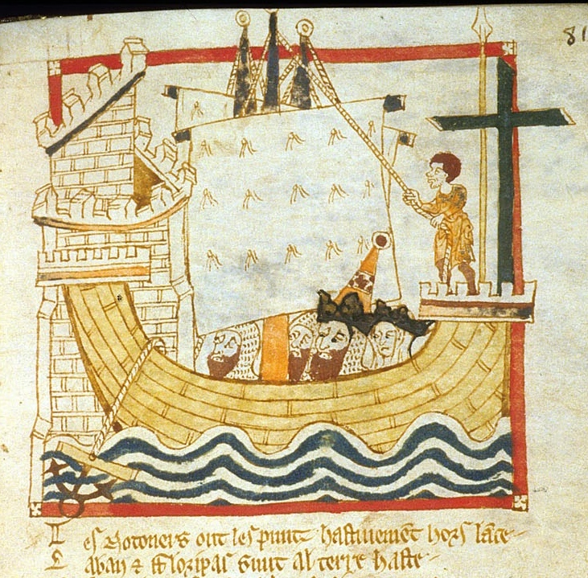
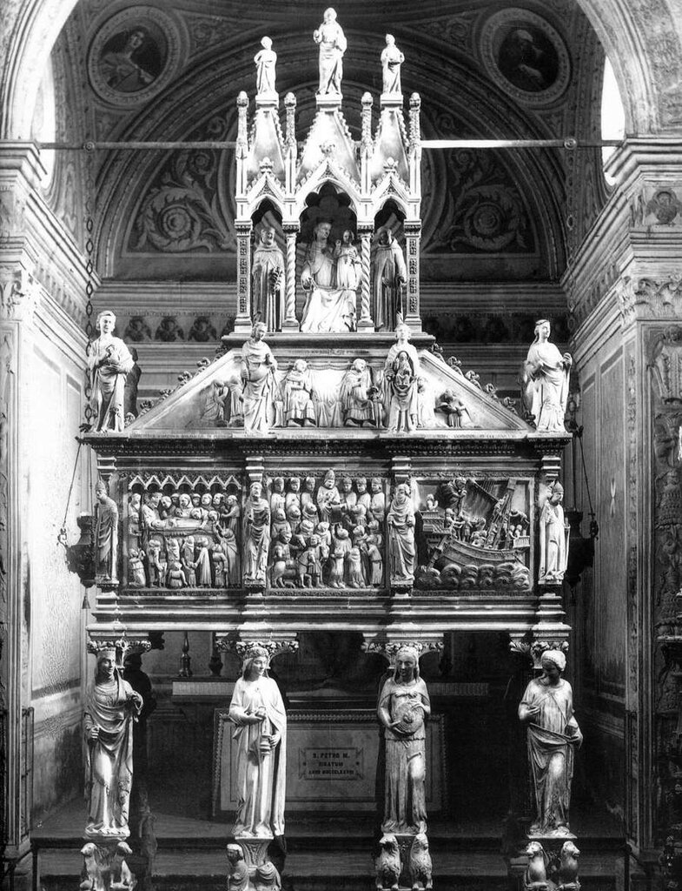
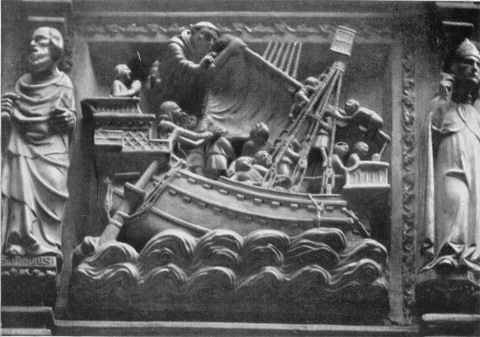
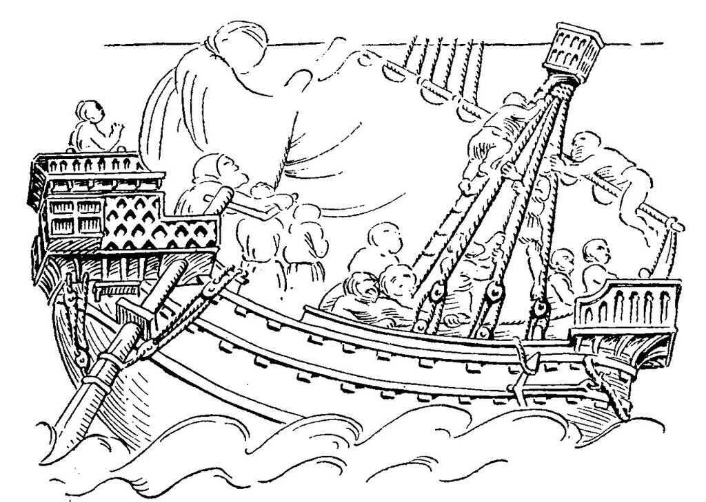

Якорный канат
«Мы на мели?» — спросил я деда.
«Что вы! Бог с вами: типун бы вам на язык — на якорь становимся!»
Гончаров, «Фрегат Паллада»
Рассмотрим теперь еще один вариант возможного назначения изучаемых нами необычных витков троса на верхней части форштевня. В различных формах он прозвучал в комментариях к первому посту на эту тему. Предположим, что верхняя часть форштевня играла роль, которая на кораблях более позднего времени отводилась битенгам. Т.е. когда якорь был отдан и ложился на грунт, якорный канат крепили на форштевне, делая вокруг него несколько оборотов, К сожалению, мы не знаем с достаточной достоверностью, как в самом деле крепили якорные канаты на средневековых кораблях, поэтому данное предположение, по крайней мере, не противоречит имеющимся фактам о конструкции судов той эпохи.

Миниатюра "Корабль с крестом" из манускрипта BL MS Egerton 3028, Roman de Brut, вторая четверть 14 века
Гипотеза приличная, но есть несколько моментов, которые мешают нам принять ее безоговорочно. На некоторый изображениях, приведенных ранее, помимо тросовых шлагов имелась и носовая боевая платформа, расположенная таким образом что оборачивать якорный канат вокруг форштевня было бы крайне неудобно. Кроме того, если тросовые шлаги на форшевне являлись частью якорного каната, то они должны были присутствовать лишь на тех изображениях, где корабли стоят на якоре, и отсутствовать на кораблях, которые были на ходу. И здесь нас ожидает разочарование. Практически все корабли на печатях того времени, слепки и гравюры с которых мы приводили, шли под распущенными парусами, а следовательно якорь их должен быть поднят. В целом, это замечание справедливо и для изображений на золотых монетах английских королей. Там практически нет изображений, где бы соседствовали убранные паруса и шлаги троса вокруг носового штевня. Исключение представляют некоторые поздние нобили Эдуарда III, а также нобли Ричарда II и Генриха IV, на одно из которых обратил внимание в своем комментарии Riot Aboard. Но это как раз то исключение, которое скорее всего подтверждает правило: шлаги троса вокруг форштевня не являются частью якорного каната.
Подобное утверждение не исключает автоматически такого варианта, когда, тросовые кольца вокруг форштевня, не являясь частью якорного каната, могут все же являться частью якорного устройства. К такому предположению нас подталкивает замечательный барельеф на гробнице Петра Веронского в базилике Сант-Эусторджо в Милане работы пизанского скульптора Джованни ди Балдуччио.


Этот памятник относится к 1339 году, исполнен с большим вниманием к деталям и дает много интересной информации о кораблях Средиземного моря XIV века.

Прорисовка Р.Мортон Нанса.
Нас на этом барельефе интересует подвеска якоря. Бесштоковый якорь взят на фиш с помощью снасти, заведенной за одну из лап якоря и закрепленной на планшире; на другом конце мы видим снасть, которая кажется слишком тонкой для якорного каната, которая закреплена с помощью узла (кнопа?) в кольце на конце веретена якоря и далее, видимо, идет к якорному клюзу. Точнее мы сказать не можем, так как подробности скрыты толстым канатом, который выходит из якорного клюза и идет далее вокруг (?) форштевня. Но это изображение уникально, многие важные детали скрыты от нашего взора и уверенно сказать, что на барельефе изображены те самые тросовые шлаги, которые мы изучаем, нельзя. Кроме того, назначение указанного толстого каната на барельефе вовсе не ясно.
Раз уж мы упомянули клюз, к месту будет сделать следующее замечание. Как известно, в современном английском языке слово «клюз», отверстие в носовой части корабельного борта, предназначенное для прохождения якорных и швартовых канатов, обозначается термином hawse [hɔːz]. Якорный канат, соответственно, называется hawser . Вплоть до шестнадцатого века эти термины писали как halse и halser. В среднеанглийском слово halse значило «шея», а глагол to halse – «оборачивать», «обматывать», «окружать», особенно, если речь идет о шее. В известном англо-латинском словаре "Catholican Anglicum" издания 1483 года в примечании к слову halse имеется отсыл к хрестоматийному примеру из английской средневековой поэмы «Piers Plowman» (1370–90), где крыса предлагает мыши купить колокольчик и повесить его на шею коту («honge about the cattys hals.»). Оставим в стороне решение вопроса о том, кто этот колокольчик будет вешать, а обратимся к нашему гаджету. Ведь может быть в то далекое время узкая часть, которой заканчивался форштевень, назывался halse (шея), а завернутый за нее канат – halser. А впоследствии, когда эта «шея» исчезла, появившийся на ее месте клюз стал называться halse, hawse. А якорный канат – halser, hawser. Здесь мы вроде бы устанавливаем связь между якорным канатом и шлагами троса на «шее» форштевня. Но, к сожалению, это пока всего лишь еще одна красивая гипотеза, каких уже много приведено относительно назначения нашего такого простого с виду гаджета.
Продолжим в следующий раз.